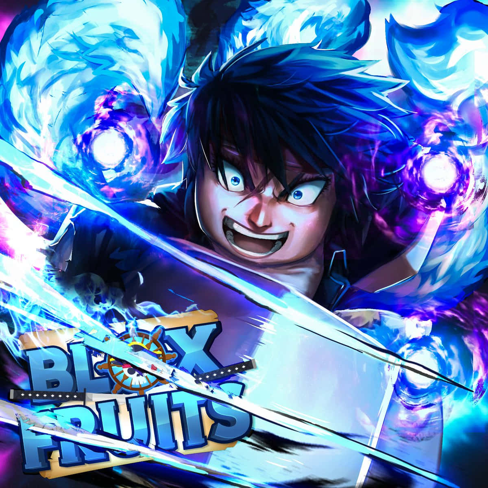

Hành trình trở thành Vua Hải Tặc hoặc Kiếm Sĩ Vĩ Đại nhất. Nắm giữ sức mạnh tối thượng từ các loại Trái Ác Quỷ và sở hữu kho vũ khí thần thoại.
Blox Fruits đưa người chơi vào một thế giới mở rộng lớn với 3 vùng biển (Sea 1, Sea 2, Sea 3). Nơi bạn tham gia các trận chiến PvP nảy lửa, săn Boss thế giới, đột kích Raid Boss và thức tỉnh năng lực tiềm ẩn.
Blox Fruits được chính thức phát hành vào ngày 16 tháng 1 năm 2019. Khởi đầu với tên gọi Blox Piece và nhanh chóng trở thành hiện tượng toàn cầu.
Liên tục cập nhật qua hơn 20 bản Update lớn: mở rộng Sea 2, Sea 3, hệ thống Race V4 thức tỉnh, đồ họa cải tiến và bổ sung các trái ác quỷ Thần Thoại như Dragon, Kitsune, Dough V2.
Đạt giải thưởng Roblox Innovation Awards, lọt top game có doanh thu và lượng người chơi hoạt động đông đảo nhất lịch sử Roblox với cộng đồng hàng chục triệu thành viên.

Trái Ác Quỷ mang lại cho người chơi những năng lực siêu phàm với các bộ kỹ năng biến hóa khôn lường. Trong thế giới Blox Fruits, chúng được phân bổ thành 3 hệ chính:
Khám phá danh sách trái ác quỷ Thần thoại, Huyền thoại cùng bộ kỹ năng và độ hiếm.
Xem danh sách ➜Kiếm huyền thoại Yoru, True Triple Katana, Soul Guitar và các phái võ Godhuman.
Xem vũ khí ➜Tăng tốc độ cày x2 Mastery, x2 Money, Fruit Notifier và nhận các đặc quyền VIP.
Xem GamePass ➜Bạn có thể mua trái ngẫu nhiên từ Blox Fruit Dealer Cousin bằng Beli hoặc chọn mua trực tiếp bằng Robux. Ngoài ra, trái còn xuất hiện tự nhiên dưới gốc cây sau mỗi 45-60 phút hoặc thưởng qua Factory Raid và Ship Raid.
Khi đạt cấp độ yêu cầu ở Sea 2 và Sea 3, bạn có thể tham gia các trận Raid Trái Ác Quỷ. Thu thập Fragment (Mảnh vỡ) để mở khóa và nâng cấp các chiêu thức thức tỉnh cực mạnh (như Dough V2, Light V2, Magma V2).
- Sea 2: Đạt cấp độ 700+, hoàn thành chuỗi nhiệm vụ tại Prison (Tù nhân) và nói chuyện với Thám Tử Quân Đội.
- Sea 3: Đạt cấp độ 1500+, hoàn thành nhiệm vụ Colosseum tại Kingdom of Rose và tiêu diệt Boss Don Swan.
Các vũ khí hàng đầu bao gồm Cursed Dual Katana (CDK), True Triple Katana (TTK), Dark Blade (Yoru) kết hợp cùng súng khống chế Soul Guitar và võ thuật Godhuman.